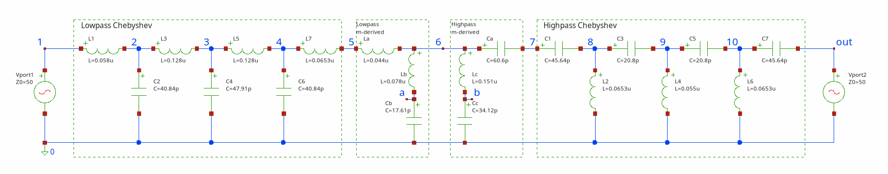

TutorialsTop, Main, Index
Tutorials in this section describes examples from folder examples in root directory of SpiceGenTcl. List of availible tutorials:
- Netlist manipulations - "examples/netlist_manipulations.tcl" file
- Subcircuit definition - "examples/subcircuit.tcl" file
- Diode current simualtion - "examples/ngspice/dc/diode_iv.tcl" and "examples/xyce/dc/diode_iv.tcl" files.
- Diode capacitance simualtion - "examples/ngspice/ac/diode_cv.tcl" and "examples/xyce/ac/diode_cv.tcl" files.
- Sensitive analysis of differential pair - "examples/ngspice/sens/diffpair_sens.tcl" file
- Transient simulation of ring oscillator - "examples/ngspice/transient/switch_oscillator.tcl" and "examples/xyce/transient/switch_oscillator.tcl" files.
- Transient simulation of four-bit adder - "examples/ngspice/transient/fourbitadder.tcl" and "examples/xyce/transient/fourbitadder.tcl"files
- S-parameter simulation of pass-band filter - "examples/ngspice/sp/filter.tcl"
Netlist manipulationsTop, Main, Index
In this example we will examine the availible actions that we can do on elements in netlist. First step is building the target netlist with variable elements:
# create netlist
set netlist [Netlist new main_netlist]
# incrementally build netlist by adding different elements
$netlist add [R new 1 net1 net2 -r 10]
$netlist add [R new 5 net1 net2 -model res_sem -l 10e-6 -w 100e-6]
$netlist add [RModel new rsem1mod -tc1 0.1 -tc2 0.4]
$netlist add [R new 2 net1 net2 -r {{r1+5/10} -eq}]
$netlist add [C new 1 net2 net3 -c 1e-6]
$netlist add [ParamStatement new {{r1 1} {r2 2}} -name ps1]
$netlist add [Comment new {some random comment} -name com1]
$netlist add [Include new {/fold1/fold2/file.lib} -name inc1]
$netlist add [Library new {/fold1/fold2/file.lib} fast -name lib1]
$netlist add [RawString new {*comment in form of raw string} -name raw1]
$netlist add [Vdc new 1 net1 net3 -dc 5]
$netlist add [Tran new -tstep 1e-6 -tstop 1e-3 -uic -name tran1]
Here we can see the ::SpiceGenTcl::Netlist::add method that adds elemements objects references to ::SpiceGenTcl::Netlist object. To view netlist we can invoke method ::SpiceGenTcl::Netlist::genSPICEString that have all circuit elements:
# generate SPICE netlist puts [$netlist genSPICEString]
Result is:
r1 net1 net2 10
r5 net1 net2 res_sem l=10e-6 w=100e-6
.model rsem1mod r(tc1=0.1 tc2=0.4)
r2 net1 net2 {r1+5/10}
c1 net2 net3 1e-6
.param r1=1 r2=2
*some random comment
.include /fold1/fold2/file.lib
.lib /fold1/fold2/file.lib fast
*comment in form of raw string
v1 net1 net3 5
.tran 1e-6 1e-3 uic
Delete elementTop, Main, Index
The opposite action is to delete with the ::SpiceGenTcl::Netlist::del method. For example, we can delete the 'c1' element from the netlist by specifying its name:
$netlist del c1 puts [$netlist genSPICEString]
Result is:
r1 net1 net2 10
r5 net1 net2 res_sem l=10e-6 w=100e-6
.model rsem1mod r(tc1=0.1 tc2=0.4)
r2 net1 net2 {r1+5/10}
.param r1=1 r2=2
*some random comment
.include /fold1/fold2/file.lib
.lib /fold1/fold2/file.lib fast
*comment in form of raw string
v1 net1 net3 5
.tran 1e-6 1e-3 uic
As you can see, capacitor 'c1' is no more in netlist.
Get elementTop, Main, Index
Next important operation is getting reference of element in netlist. We can do it again by specifying its name:
# get reference of resistor object set resistor [$netlist getElement r1]
After it, we can change the resistance parameter of element:
# change the value of resistor in circuit $resistor setParamValue r 100
We apply method ::SpiceGenTcl::Device::setParamValue with two arguments: name of parameter 'r' and its new value '100'. The other action we can do is change the pin connection of element:
# change the name of connected net to plus pin $resistor setPinNodeName np net10
We use method ::SpiceGenTcl::Device::setPinNodeName with pin name and name of the net as arguments.
Then we can again print netlist and see that value of parameter and name of connected name have been changed:
r1 net10 net2 100
r5 net1 net2 res_sem l=10e-6 w=100e-6
.model rsem1mod r(tc1=0.1 tc2=0.4)
r2 net1 net2 {r1+5/10}
.param r1=1 r2=2
*some random comment
.include /fold1/fold2/file.lib
.lib /fold1/fold2/file.lib fast
*comment in form of raw string
v1 net1 net3 5
.tran 1e-6 1e-3 uic
Print list of all elementsTop, Main, Index
We can get the list of all elements attached to $netlist object:
# get and print all names of elements attached to $netlist puts [$netlist getAllElemNames]
Result:
r1 r5 rsem1mod r2 ps1 com1 inc1 lib1 raw1 v1 tran1
Temporarly remove of elementTop, Main, Index
We can delete element from netlist and store reference to elements object, and then again add element to netlist:
set r1 [$netlist getElement r1] $netlist del r1 $netlist add $r1
Also, we can save reference to object before adding to netlist in variable and only then add it to netlist:
set r5 [R new 5 net1 net2 -r 10] $netlist add $r5
In this case we can directly modify 'r5' parameters without necessity to call ::SpiceGenTcl::Netlist::getElement method.
Subcircuit definitionTop, Main, Index
To create subcircuit definition we use special ::SpiceGenTcl::Subcircuit class and make subcircuit by defining new class with it as superclass:
oo::class create RCnet {
superclass Subcircuit
constructor {} {
# define external pins of subcircuit
set pins {plus minus}
# define input parameters of subcircuit
set params {{r 100} {c 1e-6}}
# add elements to subcircuit definition
my add [R new 1 net1 plus -r {r -eq}]
my add [C new 1 net2 net3 -r {c -eq}]
my add [R new 5 minus net2 -model res_sem -l 10e-6 -w 100e-6]
my add [RModel new rsem1mod -tc1 0.1 -tc2 0.4]
# pass name, list of pins and list of parameters to Subcircuit constructor
next rcnet $pins $params
}
}
In constructor of this class we define pins as list with names in order of appearance in subcircuit header:
set pins {plus minus}
Then we define parameters as list of two-elements list that contains name and default value of parameter:
set params {{r 100} {c 1e-6}}
Next step is adding elements to subcircuit:
my add [R new 1 net1 plus -r {r -eq}]
my add [C new 1 net2 net3 -c {c -eq}]
my add [R new 5 minus net2 -model res_sem -l 10e-6 -w 100e-6]
my add [RModel new rsem1mod -tc1 0.1 -tc2 0.4]
The last action is to pass name of subcircuit, list of pins and parameters to constructor of superclass:
next rcnet $pins $params
Name passed to superclass constructor rcnet is not necessarily the same as name of the class, this name will be printed in subcircuit definition in netlist.
To create and add this definition to netlist, we use name of the class RCnet:
# create subcircuit definition set subcircuit [RCnet new] # add to netslit $netlist add $subcircuit
But place definition of subcircuit is not enough - we need to place netlist instance of subcircuit. We can do it by using two mechanisms:
- use ::SpiceGenTcl::Ngspice::BasicDevices::SubcircuitInstance class
- use ::SpiceGenTcl::Ngspice::BasicDevices::SubcircuitInstanceAuto class
First way is direct construction of element by providing pins and parameter lists:
# create subcircuit instance
set subInst [SubcircuitInstance new 1 {{plus net1} {minus net2}} rcnet {{r 1} {c cpar -eq}}]
But the second way is simpler and allow to check if we have mistake in definition:
# create subcircuit instance with help of already created subcircuit definition $subcircuit
set subInst1 [SubcircuitInstanceAuto new $subcircuit 2 {net1 net2} -r 1 -c {cpar -eq}]
In this approach, we pass the reference of our subcircuit as the first argument. Then, we only need to provide a list of nets connected to the pins, in the order defined in the subcircuit, and parameters in the form of -paramName paramValue. If you try to add a parameter that does not exist in the subcircuit definition, you'll receive an error.
The final circuit is:
.subckt rcnet plus minus r=100 c=1e-6
r1 net1 plus {r}
c1 net2 net3 {c}
r5 minus net2 res_sem l=10e-6 w=100e-6
.model rsem1mod r(tc1=0.1 tc2=0.4)
.ends
x1 net1 net2 rcnet r=1 c={cpar}
x2 net1 net2 rcnet r=1 c={cpar}
Diode current simualtionTop, Main, Index
In this example, we examine the parametric simulation of a diode model's current curve, with the ambient temperature as the parameter. To achieve this, we need to run the simulation multiple times at different temperatures, save the results from each iteration, and then combine them into a single plot.
The circuit is simple:
As in previous examples, we start by creating the top circuit and adding elements to it:
# create top-level circuit
set circuit [Circuit new {diode IV}]
# add elements to circuit
$circuit add [D new 1 anode 0 -model diomod -area 1 -lm 1e-6]
$circuit add [Vdc new a anode 0 -dc 0]
$circuit add [DiodeModel new diomod -is 1e-12 -n 1.2 -rs 0.01 -cj0 1e-9 -trs1 0.001 -xti 5]
$circuit add [Dc new -src va -start 0 -step 2 -incr 0.01]
In the upper block of code, we add a diode instance using the ::SpiceGenTcl::Ngspice::SemiconductorDevices::D command, create the corresponding diode model with the ::SpiceGenTcl::Ngspice::SemiconductorDevices::DiodeModel command, add a DC voltage source that will be swept, and include a DC analysis statement. The voltage ranges from 0 to 2 volts to obtain the forward current characteristic.
The temperature in Ngspice is set using the .temp statement. We create an instance with the ::SpiceGenTcl::Temp command, save the object reference in the variable tempSt, and then add it to the circuit:
# add .temp set tempSt [Temp new 25] $circuit add $tempSt
Next, we create an array containing the temperature values and instantiate an object of the ::SpiceGenTcl::Ngspice::Simulators::Batch class.:
# add temperature sweep
set temps [list -55 25 85 125 175]
# set simulator with default
set simulator [Batch new {batch1}]
# attach simulator object to circuit
$circuit configure -Simulator $simulator
The only thing left is to set the temperature value in the ::SpiceGenTcl::Temp class object, run the circuit, save the data, and repeat this process multiple times:
# run circuit, change temperature, read log and data
foreach temp $temps {
$tempSt configure -Value $temp
$circuit runAndRead
puts [$circuit getLog]
set data [$circuit getDataDict]
foreach x [dget $data v(anode)] y [dget $data i(va)] {
set xf [format "%.3f" $x]
set yf [format "%.3f" [= {-$y}]]
lappend xydata [list $xf $yf]
}
lappend dataList $xydata
unset xydata
}
Plotting the results:
# plot results with ticklecharts
set chart [ticklecharts::chart new]
$chart Xaxis -name "v(anode), V" -minorTick {show "True"} -type "value"
$chart Yaxis -name "Idiode, A" -minorTick {show "True"} -type "value"
$chart SetOptions -title {} -tooltip {} -animation "False" -legend {} -toolbox {feature {dataZoom {yAxisIndex "none"}}} -grid {left "5%" right "15%"}
foreach data $dataList temp $temps {
$chart Add "lineSeries" -data $data -showAllSymbol "nothing" -name "${temp}°C" -symbolSize "1"
}
set fbasename [file rootname [file tail [info script]]]
$chart Render -outfile [file normalize [file join html_charts $fbasename.html]]
In the picture, you can see how temperature affects the forward current of the diode. Because the series resistance has a temperature dependence, all the lines intersect near 1.8V, indicating the point of zero temperature coefficient:

This circuit works almost without modification in Xyce simulator, see "examples/xyce/dc/diode_iv.tcl" file. The one of the differences is how we set the global temperature: in Xyce there is no .temp statement, for setting global temperature we use .options statement with class ::SpiceGenTcl::Options:
set tempSt [Options new {{device -sw} {temp 25}}]
and then modify this value in loop:
$tempSt setParamValue temp $temp
Diode capacitance simualtionTop, Main, Index
In this example, we measure the volt-farad (or capacitance-voltage) relationship of the diode's depletion charge. To achieve this, we need to apply a negative voltage bias to the anode and perform an AC simulation at a single frequency. We then repeat this process at different voltages, collect all the results, and finally plot the entire curve. We calculate the capacitance value using the following equation:
⎛I⎞
-Im ⎜─⎟
⎝V⎠
C = ────────────
2 ⋅ π ⋅ freq
where I and V - voltage and current phasors, freq - frequency of applied AC signal. First, we can define π constant manually, or borrow the value from ::math::constants library:
package require math::constants ::math::constants::constants pi
We again go through the circuit building sequence:
# create top-level circuit
set circuit [Circuit new {diode CV}]
# add elements to circuit
$circuit add [D new 1 0 c -model diomod -area 1 -lm 1e-6]
set vdc [Vdc new a c nin -dc 0]
$circuit add $vdc
$circuit add [Vac new b nin 0 -ac 1]
$circuit add [DiodeModel new diomod -is 1e-12 -n 1.2 -rs 0.01 -cj0 1e-9 -trs1 0.001 -xti 5]
$circuit add [Ac new -variation lin -n 1 -fstart 1e5 -fstop 1e5]
What are new here:
- AC voltage source
[Vac new b nin 0 -ac 1]- uses to generate AC signal - AC analysis statement
[Ac new -variation lin -n 1 -fstart 1e5 -fstop 1e5]- uses to define AC frequency, 100 kHz in our case.
The final circuit looks like this:

Nest step is to add voltage sweep:
# add voltage sweep set voltSweep [lseq 0 20.0 0.1]
Then we as usual, create ::SpiceGenTcl::Ngspice::Simulators::BatchLiveLog class object, attach it to $circuit, run it multiple times, collect results and apply the equation to calculate the capacitance (with the voltage phasor set to 1, so it is omitted):
#set simulator with default
set simulator [BatchLiveLog new {batch1}]
# attach simulator object to circuit
$circuit configure -Simulator $simulator
# loop in which we run simulation, change reverse bias and read the results
foreach volt $voltSweep {
#set reverse voltage bias
$vdc setParamValue dc $volt
# run simulation
$circuit runAndRead
# get data object
set data [$circuit getDataDict]
set x $volt
# get imaginary part of current
set y [@ [dget $data i(va)] 0 1]
set xf [format "%.3e" $x]
set yf [format "%.2e" [= {-$y/(2*$pi*1e5*1e-9)}]]
lappend xydata [list $xf $yf]
}
The ::SpiceGenTcl::Ngspice::Simulators::BatchLiveLog simulator differs from ::SpiceGenTcl::Ngspice::Simulators::Batch in that it prints output line by line during the simulation, rather than only at the end.
Here, we collect the imaginary component of the current flowing through the AC voltage source 'Va'.
You might wonder why we use two indices, 0 and 1, when extracting values from the vector i(va).
The answer is as follows: the first index extracts values from the list of values at different frequencies, while the second index retrieves the imaginary component.
The AC data vectors are organized as follows:
{{reVal0 imVal0} {reVal1 imVal1} {reVal2 imVal2} ...}
Here, reVal0 is the real value at frequency index 0, imVal0is the imaginary value at the same frequency, reVal1 is the real value at frequency index 1, imVal1 is the imaginary value at that frequency, and so on. Even if there is only one frequency in the AC analysis, you should still extract the value using index 0.
Now we can plot the results:
# plot results with ticklecharts
set chart [ticklecharts::chart new]
$chart Xaxis -name "v(0,c), V" -minorTick {show "True"} -type "value"
$chart Yaxis -name "Diode capacitance, nF" -minorTick {show "True"} -type "value"
$chart SetOptions -title {} -tooltip {} -animation "False" -toolbox {feature {dataZoom {yAxisIndex "none"}}}
$chart Add "lineSeries" -data $xydata -showAllSymbol "nothing"
set fbasename [file rootname [file tail [info script]]]
$chart Render -outfile [file normalize [file join html_charts $fbasename.html]]
As a result, we obtain the expected curve, showing a decrease in capacitance value with higher reverse voltage:

Sensitive analysis of differential pairTop, Main, Index
In this circuit we run DC sensitive analysis of differential pair:

We build circuit step by step:
# create top-level circuit
set circuit [Circuit new {simple differential pair}]
# add elements to circuit
$circuit add [Vdc new cc 8 0 -dc 12]
$circuit add [Vdc new ee 9 0 -dc -12]
$circuit add [Vac new cm 1 0 -ac 1]
$circuit add [Vac new dm 1 11 -ac 1]
$circuit add [Q new 1 4 2 6 -model qnr]
$circuit add [Q new 2 5 3 6 -model qnl]
$circuit add [R new s1 11 2 -r 1e3]
$circuit add [R new s2 3 1 -r 1e3]
$circuit add [R new c1 4 8 -r 10e3]
$circuit add [R new c2 5 8 -r 10e3]
$circuit add [Q new 3 7 7 9 -model qnl]
$circuit add [Q new 4 6 7 9 -model qnr]
$circuit add [R new bias 7 8 -r 20e3]
Then we add models for NPN and PNP bipolar transistors:
$circuit add [BjtGPModel new qnl npn -bf 80 -rb 100 -cjc 2e-12 -tf 0.3e-9 -tr 6e-9 -cje 3e-12 -cjc 2e-12 -va 50] $circuit add [BjtGPModel new qnr npn -bf 80 -rb 100 -cjc 2e-12 -tf 0.3e-9 -tr 6e-9 -cje 3e-12 -cjc 2e-12 -va 50]
In DC sensistive analysis we add input voltage to which we sense ohter parameters in the circuit:
$circuit add [SensDc new -outvar v(5,4)]
We create simulator, run it and read data:
#set simulator with default
set simulator [Batch new {batch1}]
# attach simulator object to circuit
$circuit configure -Simulator $simulator
# run circuit, read log and data
$circuit runAndRead
# get data object
set data [$circuit getDataDict]
set vrc1 [dget $data v(rc1)]
set vrc2 [dget $data v(rc2)]
To print resulted sensitivities we use format command where we specify the format of the number:
vrc1=6.032e-04 vrc2=-6.032e-04
Transient simulation of ring oscillatorTop, Main, Index
In this example, we analyze a circuit with transient analysis and demonstrate how to use a Tcl script to build a circuit containing multiple stages of the same subcircuit.
The circuit is a ring oscillator composed of voltage-controlled switches, based on an example from Ngspice (/examples/p-to-n-examples/switch-oscillators.cir). Each stage of the oscillator is a simple two-switch inverter, and the entire circuit consists of 17 stages.
At the beginning, we create a class called Inverter to describe the inverter and then instantiate an object of this class:
# create class that represents inverter subcircuit
oo::class create Inverter {
superclass Subcircuit
constructor {} {
# define external pins of subcircuit
set pins {in out vdd dgnd}
# define input parameters of subcircuit
set params {}
# add elements to subcircuit definition
my add [C new l out dgnd -c 0.1e-12]
my add [C new 2 out vdd -c 0.1e-12]
my add [VSwitch new p out vdd vdd in -model swswitch]
my add [VSwitch new n out dgnd in dgnd -model switchn]
# pass name, list of pins and list of parameters to Subcircuit constructor
next inverter $pins $params
}
}
# create subcircuit definition instance
set inverter [Inverter new]
Next, we define the other elements and the top-level circuit:
# create top-level circuit
set circuit [Circuit new {switch_oscillator}]
# add elements to circuit
$circuit add [Tran new -tstep 50e-12 -tstop 80e-9]
$circuit add [Options new {{method gear} {maxord 3}}]
$circuit add [RawString new ".ic v(osc_out)=0.25"]
$circuit add $inverter
$circuit add [Vdc new dd vdd2 0 -dc 3]
$circuit add [Vdc new measure vdd2 vdd -dc 0]
$circuit add [C new vdd vdd 0 -c 1e-18]
We can add multiple stages of inverters using a loop, which saves many lines of code and allows us to dynamically adjust the number of stages:
# add multiple inverters in the cycle
for {set i 1} {$i<16} {incr i} {
set ip1 [+ $i 1]
$circuit add [SubcircuitInstanceAuto new $inverter x${ip1} "n${i} n${ip1} vdd 0"]
}
After that, we add the first and last stages, as well as the models of the switches:
$circuit add [SubcircuitInstanceAuto new $inverter x18 {osc_out n1 vdd 0}]
$circuit add [SubcircuitInstanceAuto new $inverter x19 {n16 osc_out vdd 0}]
$circuit add [VSwitchModel new swswitch -vt 1 -vh 0.1 -ron 1e3 -roff 1e12]
$circuit add [VSwitchModel new switchn -vt 1 -vh 0.1 -ron 1e3 -roff 1e12]
Now we can run and read data:
#set simulator with default temporary directory
set simulator [BatchLiveLog new {batch1}]
# attach simulator object to circuit
$circuit configure -Simulator $simulator
# run circuit, read log and data
$circuit runAndRead
# get data object
set data [$circuit getDataDict]
set axis [dget $data time]
set vout [dget $data v(osc_out)]
set imeas [dget $data i(vmeasure)]
foreach time [dget $data time] vout [dget $data v(osc_out)] imeas [dget $data i(vmeasure)] {
lappend timeVout [list $time $vout]
lappend timeImeas [list $time $imeas]
}
We save output waveform and power currents, and then plot it:
# plot results with ticklecharts
# chart for output voltage
set chartVout [ticklecharts::chart new]
$chartVout Xaxis -name "time, s" -minorTick {show "True"} -type "value"
$chartVout Yaxis -name "Output voltage, V" -minorTick {show "True"} -type "value"
$chartVout SetOptions -title {} -tooltip {} -animation "False" -toolbox {feature {dataZoom {yAxisIndex "none"}}}
$chartVout Add "lineSeries" -data $timeVout -showAllSymbol "nothing" -symbolSize "0"
# chart for measured current
set chartImeas [ticklecharts::chart new]
$chartImeas Xaxis -name "time, s" -minorTick {show "True"} -type "value"
$chartImeas Yaxis -name "Current, I" -minorTick {show "True"} -type "value"
$chartImeas SetOptions -title {} -tooltip {} -animation "False" -toolbox {feature {dataZoom {yAxisIndex "none"}}}
$chartImeas Add "lineSeries" -data $timeImeas -showAllSymbol "nothing" -symbolSize "0"
# create multiplot
set layout [ticklecharts::Gridlayout new]
$layout Add $chartVout -bottom "5%" -height "40%" -width "80%"
$layout Add $chartImeas -bottom "55%" -height "40%" -width "80%"
set fbasename [file rootname [file tail [info script]]]
$layout Render -outfile [file normalize [file join .. html_charts $fbasename.html]] -height 800px

Transient simulation of four-bit adderTop, Main, Index
This example, like the previous one, involves a circuit run in transient analysis. However, it differs in terms of complexity and the presence of nested subcircuit elements.
The circuit is a classic adder with 2 four-bit inputs, sourced from Ngspice tests (/tests/transient/fourbitadder.cir). We incrementally build it from the simplest NAND logic blocks up to the four-bit adder circuit.
The NAND block itself is constructed from a combination of bipolar transistors, diodes, and resistors. Its definition is as follows:
# create class that represents NAND subcircuit
oo::class create NAND {
superclass Subcircuit
constructor {} {
# define external pins of subcircuit
set pins {1 2 3 4}
# define input parameters of subcircuit
set params {}
# add elements to subcircuit definition
my add [Q new 1 9 5 1 -model qmod]
my add [D new 1clamp 0 1 -model dmod]
my add [Q new 2 9 5 2 -model qmod]
my add [D new 2clamp 0 2 -model dmod]
my add [R new b 4 5 -r 4e3]
my add [R new 1 4 6 -r 1.6e3]
my add [Q new 3 6 9 8 -model qmod]
my add [R new 2 8 0 -r 1e3]
my add [R new c 4 7 -r 130]
my add [Q new 4 7 6 10 -model qmod]
my add [D new vbedrop 10 3 -model dmod]
my add [Q new 5 3 8 0 -model qmod]
# pass name, list of pins and list of parameters to Subcircuit constructor
next nand $pins $params
}
}
# create NAND subcircuit definition instance
set nand [NAND new]
To build one-bit adder we use combination of NAND subcircuits:
# create class that represents ONEBIT subcircuit
oo::class create ONEBIT {
superclass Subcircuit
constructor {} {
# define external pins of subcircuit
set pins {1 2 3 4 5 6}
# define input parameters of subcircuit
set params {}
# add elements to subcircuit definition
global variable nand
my add [XAuto new $nand x1 "1 2 7 6"]
my add [XAuto new $nand x2 "1 7 8 6"]
my add [XAuto new $nand x3 "2 7 9 6"]
my add [XAuto new $nand x4 "8 9 10 6"]
my add [XAuto new $nand x5 "3 10 11 6"]
my add [XAuto new $nand x6 "3 11 12 6"]
my add [XAuto new $nand x7 "10 11 13 6"]
my add [XAuto new $nand x8 "12 13 4 6"]
my add [XAuto new $nand x9 "11 7 5 6"]
# pass name, list of pins and list of parameters to Subcircuit constructor
next onebit $pins $params
}
}
# create ONEBIT subcircuit definition instance
set onebit [ONEBIT new]
Previously, we built subcircuits, but here we demonstrate that subcircuits can be used within the definitions of other subcircuits, allowing us to create a multi-level hierarchy for building complex circuits. We start by combining one-bit adders to form two-bit adders, and then increase the level of grouping by connecting two two-bit subcircuits to create a four-bit adder:
# create class that represents TWOBIT subcircuit
oo::class create TWOBIT {
superclass Subcircuit
constructor {} {
# define external pins of subcircuit
set pins {1 2 3 4 5 6 7 8 9}
# define input parameters of subcircuit
set params {}
# add elements to subcircuit definition
global variable onebit
my add [XAuto new $onebit x1 "1 2 7 5 10 9"]
my add [XAuto new $onebit x2 "3 4 10 6 8 9"]
# pass name, list of pins and list of parameters to Subcircuit constructor
next twobit $pins $params
}
}
# create TWOBIT subcircuit definition instance
set twobit [TWOBIT new]
# create class that represents FOURBIT subcircuit
oo::class create FOURBIT {
superclass Subcircuit
constructor {} {
# define external pins of subcircuit
set pins {1 2 3 4 5 6 7 8 9 10 11 12 13 14 15}
# define input parameters of subcircuit
set params {}
# add elements to subcircuit definition
global variable twobit
my add [XAuto new $twobit x1 "1 2 3 4 9 10 13 16 15"]
my add [XAuto new $twobit x2 "5 6 7 8 11 12 16 14 15"]
# pass name, list of pins and list of parameters to Subcircuit constructor
next fourbit $pins $params
}
}
# create FOURBIT subcircuit definition instance
set fourbit [FOURBIT new]
Next step is to initialize top circuit and add all subcircuit definitions to it:
# create top-level circuit
set circuit [Circuit new {Four-bit adder}]
# add elements to circuit
$circuit add [Tran new -tstep 1e-9 -tstop 10e-6]
$circuit add [Options new {{noacct -sw}}]
$circuit add $nand
$circuit add $onebit
$circuit add $twobit
$circuit add $fourbit
$circuit add [XAuto new $fourbit x18 {1 2 3 4 5 6 7 8 9 10 11 12 0 13 99}]
To properly see the circuit in action we define input signals to all eight inputs, as well as power:
set trtf 10e-9
set tonStep 10e-9
set perStep 50e-9
$circuit add [Vdc new cc 99 0 -dc 5]
set i 1
foreach name [list in1a in1b in2a in2b in3a in3b in4a in4b] {
$circuit add [Vpulse new $name $i 0 -low 0 -high 3 -td 0 -tf $trtf -tr $trtf -pw [= {$tonStep*pow(2,$i-1)}] -per [= {$perStep*pow(2,$i-1)}]]
incr i
}
Add load resistors:
$circuit add [R new bit0 9 0 -r 1e3] $circuit add [R new bit1 10 0 -r 1e3] $circuit add [R new bit2 11 0 -r 1e3] $circuit add [R new bit3 12 0 -r 1e3] $circuit add [R new cout 13 0 -r 1e3]
Add semiconductor devices models:
$circuit add [DiodeModel new dmod] $circuit add [BjtGPModel new qmod npn -bf 75 -rb 100 -cje 1e-12 -cjc 3e-12]
Now we can create simulator and run circuit:
#set simulator with default temporary directory
set simulator [BatchLiveLog new {batch1}]
# attach simulator object to circuit
$circuit configure -Simulator $simulator
# run circuit, read log and data
$circuit runAndRead
Finally we read the data and plot it as usual:
# get data dict
set data [$circuit getDataDict]
set timeList [dget $data time]
set v9List [dget $data v(9)]
set v10List [dget $data v(10)]
set v11List [dget $data v(11)]
set v12List [dget $data v(12)]
foreach time $timeList v9 $v9List v10 $v10List v11 $v11List v12 $v12List {
lappend timeV9 [list $time $v9]
lappend timeV10 [list $time $v10]
lappend timeV11 [list $time $v11]
lappend timeV12 [list $time $v12]
}
# plot data with ticklecharts
set nodes [list 9 10 11 12]
set layout [ticklecharts::Gridlayout new]
set i 0
foreach node $nodes {
ticklecharts::chart create chartV$node
chartV$node SetOptions -title {} -tooltip {} -animation "False" -toolbox {feature {dataZoom {yAxisIndex "none"}}}
chartV$node Xaxis -name "time, s" -minorTick {show "True"} -type "value"
chartV$node Yaxis -name "v(${node}), V" -minorTick {show "True"} -type "value"
chartV$node Add "lineSeries" -data [subst $[subst timeV$node]] -showAllSymbol "nothing" -name "V(${node})" -symbolSize "0"
$layout Add chartV$node -bottom "[= {4+24*$i}]%" -height "18%" -width "80%"
incr i
}
set fbasename [file rootname [file tail [info script]]]
$layout Render -outfile [file normalize [file join .. html_charts $fbasename.html]] -height 800px
Results:

S-parameter simulation of pass-band filterTop, Main, Index
This example demonstrates capability of AC simulation with S-parameter output in Ngspice. As the circuit of interest we use band pass filter sourced from Ngspice examples (/examples/sp/filter.sp).
The circuit image is (from Novarianti, Dini. (2019). Design and Implementation of Chebyshev Band Pass Filter with M-Derived Section in Frequency Band 88 - 108 MHz):

The circuit is built with following code:
# create top-level circuit
set circuit [Circuit new {filter s-parameters}]
# add elements to circuit
$circuit add [Vport new gen 1 0 -dc 0 -ac 1 -portnum 1]
$circuit add [L new 1 1 2 -l 0.058u]
$circuit add [C new 2 2 0 -c 40.84p]
$circuit add [L new 3 2 3 -l 0.128u]
$circuit add [C new 4 3 0 -c 47.91p]
$circuit add [L new 5 3 4 -l 0.128u]
$circuit add [C new 6 4 0 -c 40.48p]
$circuit add [L new 7 4 5 -l 0.058u]
$circuit add [L new a 5 6 -l 0.044u]
$circuit add [L new b 6 a -l 0.078u]
$circuit add [C new b a 0 -c 17.61p]
$circuit add [L new c 6 b -l 0.151u]
$circuit add [C new c b 0 -c 34.12p]
$circuit add [C new 7 6 7 -c 26.035p]
$circuit add [L new 8 7 0 -l 0.0653u]
$circuit add [C new 8 7 8 -c 20.8p]
$circuit add [L new 9 8 0 -l 0.055u]
$circuit add [C new 9 8 9 -c 20.8p]
$circuit add [L new 10 9 0 -l 0.653u]
$circuit add [C new 10 9 out -c 45.64p]
$circuit add [Vport new l out 0 -dc 0 -ac 0 -portnum 2]
You should draw attention to special voltage sources, ::SpiceGenTcl::Ngspice::Sources::Vport, that represents RF-port with special parameter -portnum as a port number, so digits in S-parameters are refered to these port numbers (i.e. S11, S12, S21, S22).
Special analysis object for S-parameter simulation is ::SpiceGenTcl::Ngspice::Analyses::Sp, parameters are the same as for AC analysis:
$circuit add [Sp new -variation lin -n 500 -fstart 10meg -fstop 200meg]
As usual, we create simulator, run the circuit and read the data:
set simulator [BatchLiveLog new {batch1}]
# attach simulator object to circuit
$circuit configure -Simulator $simulator
$circuit runAndRead
# get data object
set data [$circuit getDataDict]
Next few lines of code is used to extract magnitude of S11 and S21 parameters:
# get frequency
set freq [dget $data frequency]
# get s11
set s11 [dget $data v(s_1_1)]
# get s21
set s21 [dget $data v(s_2_1)]
# extract real/imaginary parts of S11 and S21, and calculate magnitude
set freq [lmap val $freq {@ $val 0}]
set s11Mag [lmap s11Re [lmap val $s11 {@ $val 0}] s11Im [lmap val $s11 {@ $val 1}] {= {sqrt($s11Re**2+$s11Im**2)}}]
set s21Mag [lmap s21Re [lmap val $s21 {@ $val 0}] s21Im [lmap val $s21 {@ $val 1}] {= {sqrt($s21Re**2+$s21Im**2)}}]
# prepare data for ticklecharts
set freq_s11Mag [lmap freqVal $freq s11MagVal $s11Mag {list $freqVal $s11MagVal}]
set freq_s21Mag [lmap freqVal $freq s21MagVal $s21Mag {list $freqVal $s21MagVal}]
Now we are ready to plot data:
set chart [ticklecharts::chart new]
$chart Xaxis -name "Frequency, Hz" -minorTick {show "True"} -type "value"
$chart Yaxis -name "mag(S)" -minorTick {show "True"} -type "value"
$chart SetOptions -title {} -tooltip {} -legend {} -animation "False" -toolbox {feature {dataZoom {yAxisIndex "none"}}}
$chart Add "lineSeries" -data $freq_s11Mag -showAllSymbol "nothing" -name "S11" -symbolSize "0"
$chart Add "lineSeries" -data $freq_s21Mag -showAllSymbol "nothing" -name "S21" -symbolSize "0"
set fbasename [file rootname [file tail [info script]]]
$chart Render -outfile [file normalize [file join .. html_charts $fbasename.html]]
The result is:

We can clearly see the band that spans from 80Mhz to 128Mhz.